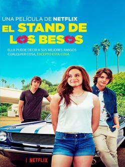
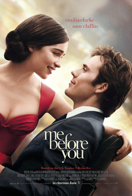
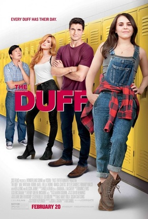

17 Otra vez
Duracion:
102 Minutos
Estreno:
17 de abril de 2009
Genero:
Comedia y cine adolescente
Donde se filmo:
Estados unidos de america
Producida por:
Adam Shankman
Dirigida por:
Burr Steers
Elenco:
Zac Efron como Mike O' Donnell (a los 17),
Matthew Perry como Mike O'Donnell (adulto),
Leslie Mann como Scarlett O'Donnell (adulta),
Allison Miller como Scarlett O'Donnell(adolescente),
Thomas Lennon como Ned Freedman,
Michelle Trachtenberg como Maggie O'Donnell,
Sterling Knight como Alex O'Donnell,
Melora Hardin como Directora Jane Masterson,
Jim Gaffigan como El Entrenador,
Hunter Parrish como Stan,
Tommy Dewey como Roger.
Sinopsis:
Mike O'Connell era un gran jugador de baloncesto cuando estaba en el colegio, pero cuando descubrió que su novia estaba embarazada decidió abandonar sus planes y casarse.
Con el transcurso de los años, Mike no se siente feliz. La relación no va bien, sus hijos no le respetan y un proyecto del trabajo no resulta.
Un dia Mike decide visitar su antiguo colegio y revivir fotografías y objetos de su adolescencia, será entonces cuando piense en tener una nueva oportunidad.
Repentinamente, su deseo se realiza y vuelve a tener 17 años.
Con la ayuda de su amigo Ned Gold (Thomas Lennon) se volverá a inscribir en el colegio.

El stand de los besos
Duracion:
105 Minutos
Estreno:
11 de mayo de 2018
Donde se filmo:
Estados unids de america
Genero:
Comedia y comedia romántica
Producida por:
Vince Marcello,
Michele Weisler
Dirigida por:
Vince Marcello
Elenco:
Joey King como Elle Evans,
Joel Courtney como Lee Flynn,
Jacob Elordi como Noah Flynn,
Meganne Young como Rachel,
Molly Ringwald como Sra. Flynn,
Byron Langley como Warren,
Jessica Sutton como Mia,
Morné Visser como Sr. Flynn,
Carson White como Brad Evans,
Joshua Daniel Eady como Tuppen.
Sinopsis:
Elle Evans es una estudiante de preparatoria de 16 años que ha intentado pero nunca ha sido besada, para la recaudación de fondos, Elle y Lee deciden poner un puesto de besos sin imaginar que terminaría besando a Noah el chico más guapo y popular de su escuela.
Tras darse cuenta de que sienten algo el uno por el otro, se ven envueltos en un romance secreto, el problema es que ese chico no es nada menos que el hermano mayor de su mejor amigo con el que ha pasado toda su infancia, tendrá que decidir entre la amistad de Lee o seguir a su corazón y tener un romance público con Noah.
Bajo la misma estrella
Duracion:
126 Minutos
Donde se filmo:
Estados unidos de america
Genero:
Drama romántico y cine adolescente
Producida por:
Wyck Godfrey,
Marty Bowen
Estreno:
6 de junio de 2014
Dirigida por:
Josh Boone
Elenco:
Shailene Woodley como Hazel Grace Lancaster,
Ansel Elgort como Augustus "Gus" Waters,
Nat Wolff como Isaac,
Laura Dern como Frannie Lancaster,
Sam Trammell como Michael Lancaster,
Mike Birbiglia como Patrick,
Lotte Verbeek como Lidewij Vliegenthart,
Willem Dafoe como Peter Van Houten,
Milica Govich como la señora Waters,
David Whalen como el señor Waters,
Sinopsis:
Hazel Grace Lancaster tiene 16 años. Ama y soporta a sus padres que, en ocasiones, llegan a adorarla con exceso.
Hazel está chiflada por un joven, Gus Waters que parece igualmente loco por ella.
A medida que van intimando, Hazel y Gus comparten los temores que acompañan a su estado de salud, además de su amor por los libros.
En numerosas ocasiones ha tratado, sin éxito, de ponerse en contacto con Peter Van Houten, el autor del libro favorito de hazel, que lleva una vida retirada.
Cuando Gus consigue llegar a Van Houten a través del ayudante del escritor, el resultado, que le deja estupefacto, es una invitación para conocer al autor en Ámsterdam.
Gus está decidido a llevarse a Hazel en una odisea que dará respuesta a cada pregunta que se haya hecho jamás sobre un libro que tanto ha supuesto para ella.

Me before you
Duracion:
110 Minutos
Genero :
Drama y romance
Estreno:
23 de mayo de 2016
Donde se filmo:
Reino unido y
Estados unidos de america
Producida por:
Karen Rosenfelt,
Alison Owen
Dirigida por:
Thea Sharrock
Elenco:
Emilia Clarke como Louisa "Lou" Clark,
Sam Claflin como William "Will" Traynor,
Jenna Coleman como Katrina "Treena" Clark,
Charles Dance como Steven Traynor,
Janet McTeer como Camilla Traynor,
Matthew Lewis como Patrick,
Brendan Coyle como Bernard Clark,
Vanessa Kirby como Alicia Dewares,
Ben Lloyd-Hughes7 como Rupert Collins,
Steve Peacocke como Nathan,
Samantha Spiro7 como Josephine "Josie" Clark,
Joanna Lumley8 como Mary Rawlinson.
Sipnosis:
Louisa "Lou" Clark es una entusiasta, parlanchina, ingenua y alegre veinteañera que jamás ha salido de su pueblo, y que debe buscar urgentemente un trabajo para mantener a su familia.
En su camino se cruza con Will Traynor, un exitoso hombre de negocios que gusta del deporte de riesgo y que también creció en el mismo pueblo quien, tras sufrir un accidente de tránsito, queda tetrapléjico en silla de ruedas.
Debido a su condición, este ex aventurero ha caído en una profunda amargura, por lo que está cada vez más decidido a suicidarse. El trabajo de Lou será cuidar y animar a Will, en el que se empleará a fondo, decidida a evitar el desenlace que tanto ella como su familia temen, a la vez que irá naciendo un emotivo sentimiento de amor pero lo que ella no se esperaba era que Will ocultaba un gran secreto que se llevaría al cabo en seis meses.

The Duff
Duracion:
101 Minutos
Estreno:
20 de febrero de 2015
Donde se filmo:
Estados unidos de america
Genero:
Comedia y cine adolescente
Producida por:
CBS FIlms
Dirigida por:
Ari Sandel
Elenco:
Mae Whitman como Bianca Piper,
Robbie Amell como Wesley Rush,
Bella Thorne como Madison Morgan,
Bianca A. Santos como Casey,
Allison Janney como Dottie Piper,
Ken Jeong como Sr. Arthur,
Skyler Samuels como Jessica,
Chris Wylde como Sr. Fillmore,
Mahaley Manning como Kara,
Nick Eversman como Toby Tucker,
Seth Meriwether como AJ,
Gabriela Fraile como Ashley,
Danielle Lyn como Tracy,
Rebecca Weil como Caitlyn,
Andrés Valenzuela como Toby Wathers.
Sinopsis:
Bianca es una estudiante que descubre que entre la gente popular del instituto, tiene puesta la etiqueta de "la D.U.F.F.", siglas de la Amiga Gorda Fea Diseñada, es decir, la más fea de un grupo de amigas.
En un intento para que no cunda el caos en su último año como escolar, decide pedir la ayuda de su encantador vecino el deportista, Wesley, para reinventarse y desprenderse del despreciable calificativo, y así poder conseguir una cita con Toby, su amor platónico.